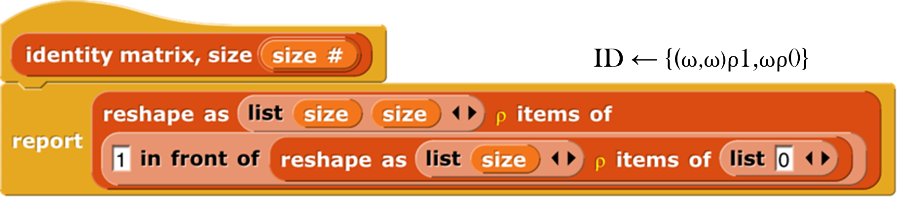
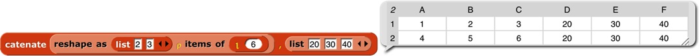
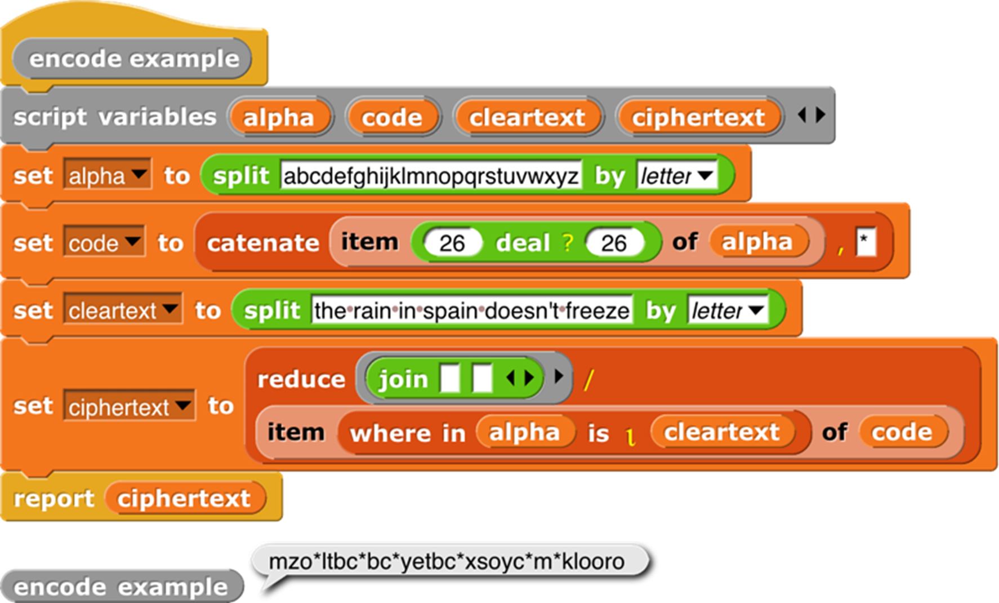
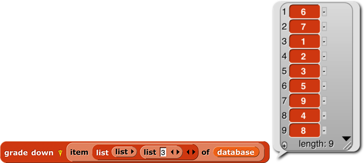

Appendix B — Appendix B. APL features
The book A Programming Language was published by mathematician Kenneth E. Iverson in 1962. He wanted a formal language that would look like what mathematicians write on chalkboards. The then-unnamed language would later take its name from the first letters of the words in the book’s title. It was little-known until 1964, when a formal description of the just-announced IBM System/360 in the IBM Systems Journal used APL notation. (Around the same time, Iverson’s associate Adin Falkoff gave a talk on APL to a New York Association for Computing Machinery chapter, with an excited 14-year-old Brian Harvey in the audience.) But it wasn’t until 1966 that the first public implementation of the language for the System/360 was published by IBM. (It was called “APL\360 ” because the normal slash character / represents the “reduce” operator in APL, while backslash is “expand.”)
The crucial idea behind APL is that mathematicians think about collections of numbers, one-dimensional vectors and two-dimensional matrices , as valid objects in themselves, what computer scientists later learned to call “first class data .” A mathematician who wants to add two vectors writes v1 + v2, not “for i = 1 to length(v1), result[i]=v1[i]+v2[i].” Same for a programmer using APL.
There are three kinds of function in APL: scalar functions , mixed functions , and operators . A scalar function is one whose natural domain is individual numbers or text characters. A mixed function is one whose domain includes arrays (vectors, matrices, or higher-dimensional collections). In Snap!, scalar functions are generally found in the green Operators palette, while mixed functions are in the red Lists palette. The third category, confusingly for Snap! users, is called operators in APL, but corresponds to what we call higher order functions : functions whose domain includes functions.
Snap! hyperblocks are scalar functions that behave like APL scalar functions: they can be called with arrays as inputs, and the underlying function is applied to each number in the arrays. (If the function is monadic, meaning that it takes one input, then there’s no complexity to this idea. Take the square root of an array, and you are taking the square root of each number in the array. If the function is dyadic, taking two inputs, then the two arrays must have the same shape. Snap! is more forgiving than APL; if the arrays don’t agree in number of dimensions, called the rank of the array, the lower-rank array is matched repeatedly with subsets of the higher-rank one; if they don’t agree in length along one dimension, the result has the shorter length and some of the numbers in the longer-length array are ignored. An exception in both languages is that if one of the two inputs is a scalar, then it is matched with every number in the other array input.)
As explained in Section IV.F, this termwise extension of scalar functions is the main APL-like feature built into Snap! itself. We also include an extension of the item block to address multiple dimensions, an extension to the length block with five list functions from APL, and a new primitive reshape block . The APL library extends the implementation of APL features to include a few missing scalar functions and several missing mixed functions and operators.
Programming in APL really is very different in style from programming in other languages, even Snap!. This appendix can’t hope to be a complete reference for APL, let alone a tutorial. If you’re interested, find one of those in a library or a (probably used) bookstore, read it, and do the exercises. Sorry to sound like a teacher, but the notation is sufficiently weird as to take a lot of practice before you start to think in APL.
A note on versions: There is a widely standardized APL2, several idiosyncratic extensions, and a successor language named J. The latter uses plain ASCII characters, unlike the ones with APL in their names, which use the mathematician’s character set, with Greek letters, typestyles (boldface and/or italics in books; underlined, upper case, or lower case in APL) as loose type declarations, and symbols not part of anyone’s alphabet, such as ⌊ for floor and ⌈ for ceiling. To use the original APL, you needed expensive special computer terminals. (This was before you could download fonts in software. Today the more unusual APL characters are in Unicode at U+2336 to U+2395.) The character set was probably the main reason APL didn’t take over the world. APL2 has a lot to recommend it for Snap! users, mainly because it moves from the original APL idea that all arrays must be uniform in dimension, and the elements of arrays must be numbers or single text characters, to our idea that a list can be an element of another list, and that such elements don’t all have to have the same dimensions. Nevertheless, its mechanism for allowing both old-style APL arrays and more general “nested arrays” is complicated and hard for an APL beginner (probably all but two or three Snap! users) to understand. So we are starting with plain APL. If it turns out to be wildly popular, we may decide later to include APL2 features.
Here are some of the guiding ideas in the design of the APL library:
Goal: Enable interested Snap! users to learn the feel and style of APL programming. It’s really worth the effort. For example, we didn’t hyperize the = block because Snap! users expect it to give a single yes-or-no answer about the equality of two complete structures , whatever their types and shapes. In APL, = is a scalar function; it compares two numbers or two characters. How could APL users live without the ability to ask if two structures are equal? Because in APL you can say ∧/,a=b to get that answer. Reading from right to left, a=b reports an array of Booleans (represented in APL as 0 for False, 1 for True); the comma operator turns the shape of the array into a simple vector; and ∧/ means “reduce with and”; “reduce” is our combine function. That six-character program is much less effort than the equivalent
 in Snap!. Note in passing that if you wanted to know how many corresponding elements of the two arrays are equal, you’d just use +/ instead of ∧/. Note also that our APLish blocks are a little verbose, because they include up to three notations for the function: the usual Snap! name (e.g., flatten), the name APL programmers use when talking about it (ravel ), and, in yellow type, the symbol used in actual APL code (,). We’re not consistent about it;
in Snap!. Note in passing that if you wanted to know how many corresponding elements of the two arrays are equal, you’d just use +/ instead of ∧/. Note also that our APLish blocks are a little verbose, because they include up to three notations for the function: the usual Snap! name (e.g., flatten), the name APL programmers use when talking about it (ravel ), and, in yellow type, the symbol used in actual APL code (,). We’re not consistent about it;  seems self-documenting. And LCM (and) is different even though it has two names; it turns out that if you represent Boolean values as 0 and 1, then the algorithm to compute the least common multiple of two integers computes the and function if the two inputs happen to be Boolean. Including the APL symbols serves two purposes: the two or three Snap! users who’ve actually programmed in APL will be sure what function they’re using, but more importantly, the ones who are reading an APL tutorial while building programs in Snap! will find the block that matches the APL they’re reading.
seems self-documenting. And LCM (and) is different even though it has two names; it turns out that if you represent Boolean values as 0 and 1, then the algorithm to compute the least common multiple of two integers computes the and function if the two inputs happen to be Boolean. Including the APL symbols serves two purposes: the two or three Snap! users who’ve actually programmed in APL will be sure what function they’re using, but more importantly, the ones who are reading an APL tutorial while building programs in Snap! will find the block that matches the APL they’re reading.Goal: Bring the best and most general APL ideas into “mainstream” Snap! programming style. Media computation , in particular, becomes much simpler when scalar functions can be applied to an entire picture or sound. Yes, map provides essentially the same capability, but the notation gets complicated if you want to map over columns rather than rows. Also, Snap! lists are fundamentally one-dimensional, but real data often have more dimensions. A Snap! programmer has to be thinking all the time about the convention that we represent a matrix as a list of rows, each of which is a list of individual cells. That is, row 23 of a spreadsheet is item 23 of spreadsheet, but column 23 is map (item 23 of _) over spreadsheet. APL treats rows and columns more symmetrically.
Non-goal: Allow programs written originally in APL to run in Snap! essentially unchanged. For example, in APL the atomic text unit is a single character, and strings of characters are lists. We treat a text string as scalar, and that isn’t going to change. Because APL programmers rarely use conditionals, instead computing functions involving arrays of Boolean values to achieve the same effect, the notation they do have for conditionals is primitive (in the sense of Paleolithic , not in the sense of built in). We’re not changing ours.
Non-goal: Emulate the terse APL syntax. It’s too bad, in a way; as noted above, the terseness of expressing a computation affects APL programmers’ sense of what’s difficult and what isn’t. But you can’t say “terse” and “block language” in the same sentence. Our whole raison d’être is to make it possible to build a program without having to memorize the syntax or the names of functions, and to allow those names to be long enough to be self-documenting. And APL’s syntax has its own issues, of which the biggest is that it’s hard to use functions with more than two inputs; because most mathematical dyadic functions use infix notation (the function symbol between the two inputs), the notion of “left argument” and “right argument” is universal in APL documentation. The thing people most complain about, that there is no operator precedence (like the multiplication-before-addition rule in normal arithmetic notation), really doesn’t turn out to be a problem. Function grouping is strictly right to left, so 2×3+4 means two times seven, not six plus four. That takes some getting used to, but it really doesn’t take long if you immerse yourself in APL. The reason is that there are too many infix operators for people to memorize a precedence table. But in any case, block notation eliminates the problem, especially with Snap!’s zebra coloring. You can see and control the grouping by which block is inside which other block’s input slot. Another problem with APL’s syntax is that it bends over backward not to have reserved words, as opposed to Fortran, its main competition back then. So the dyadic ○ “circular functions” function uses the left argument to select a trig function. 1○x is sin(x), 2○x is cos(x), and so on. ‾1○x is arcsin(x). What’s 0○x? Glad you asked; it’s\(\\\sqrt{1 - x^{2}}\).
Boolean values
Snap! uses distinct Boolean values true and false that are different from other data types. APL uses 1 and 0, respectively. The APL style of programming depends heavily on doing arithmetic on Booleans, although their conditionals insist on only 0 or 1 in a Boolean input slot, not other numbers. Snap! arithmetic functions treat false as 0 and true as 1, so our APL library tries to report Snap! Boolean values from predicate functions.
Scalar functions

These are the scalar functions in the APL library. Most of them are straightforward to figure out. The scalar = block provides an APL-style version of = (and other exceptions) as a hyperblock that extends termwise to arrays. Join, the only non-predicate non-hyper scalar primitive, has its own scalar join block . 7 deal 52 reports a random vector of seven numbers from 1 to 52 with no repetitions, as in dealing a hand of cards. Signum of a number reports 1 if the number is positive, 0 if it’s zero, or -1 if it’s negative. Roll 6 reports a random roll of a six-sided die. To roll 8 dice, use  , which would look much more pleasant as ?8⍴6. But perhaps our version is more instantly readable by someone who didn’t grow up with APL. All the library functions have help messages available.
, which would look much more pleasant as ?8⍴6. But perhaps our version is more instantly readable by someone who didn’t grow up with APL. All the library functions have help messages available.
Mixed functions
Mixed functions include lists in their natural domain or range. That is, one or both of its inputs must be a list, or it always reports a list. Sometimes both inputs are naturally lists; sometimes one input of a dyadic mixed function is naturally a scalar, and the function treats a list in that input slot as an implicit map, as for scalar functions. This means you have to learn the rule for each mixed function individually.
 The shape of function takes any input and reports a vector of the maximum size of the structure along each dimension. For a vector, it returns a list of length 1 containing the length of the input. For a matrix, it returns a two-item list of the number of rows and number of columns of the input. And so on for higher dimensions. If the input isn’t a list at all, then it has zero dimensions, and shape of reports an empty vector. Equivalent to the dimensions of primitive, as of 6.6.
The shape of function takes any input and reports a vector of the maximum size of the structure along each dimension. For a vector, it returns a list of length 1 containing the length of the input. For a matrix, it returns a two-item list of the number of rows and number of columns of the input. And so on for higher dimensions. If the input isn’t a list at all, then it has zero dimensions, and shape of reports an empty vector. Equivalent to the dimensions of primitive, as of 6.6.

 Rank of isn’t an actual APL primitive, but the composition ⍴⍴ (shape of shape of a structure), which reports the number of dimensions of the structure (the length of its shape vector), is too useful to omit. (It’s very easy to type the same character twice on the APL keyboard, but less easy to drag blocks together.) Equivalent to the rank of primitive, as of 6.6.
Rank of isn’t an actual APL primitive, but the composition ⍴⍴ (shape of shape of a structure), which reports the number of dimensions of the structure (the length of its shape vector), is too useful to omit. (It’s very easy to type the same character twice on the APL keyboard, but less easy to drag blocks together.) Equivalent to the rank of primitive, as of 6.6.

Reshape takes a shape vector (such as shape might report) on the left and any structure on the right. It ignores the shape of the right input, stringing the atomic elements into a vector in row-major order (that is, all of the first row left to right, then all of the second row, etc.). (The primitive reshape takes the inputs in the other order.) It then reports an array with the shape specified by the first input containing the items of the second:

If the right input has more atomic elements than are required by the left-input shape vector, the excess are ignored without reporting an error. If the right input has too few atomic elements, the process of filling the reported array starts again from the first element. This is most useful in the specific case of an atomic right input, which produces an array of any desired shape all of whose atomic elements are equal. But other cases are sometimes useful too:


 Flatten takes an arbitrary structure as input and reports a vector of its atomic elements in row-major order. Lispians call this flattening the structure, but APLers call it “ravel” because of the metaphor of pulling on a ball of yarn, so what they really mean is “unravel.” (But the snarky sound of that is uncalled-for, because a more advanced version that we might implement someday is more like raveling.) One APL idiom is to apply this to a scalar in order to turn it into a one-element vector, but we can’t use it that way because you can’t type a scalar value into the List-type input slot. Equivalent to the primitive flatten of block.
Flatten takes an arbitrary structure as input and reports a vector of its atomic elements in row-major order. Lispians call this flattening the structure, but APLers call it “ravel” because of the metaphor of pulling on a ball of yarn, so what they really mean is “unravel.” (But the snarky sound of that is uncalled-for, because a more advanced version that we might implement someday is more like raveling.) One APL idiom is to apply this to a scalar in order to turn it into a one-element vector, but we can’t use it that way because you can’t type a scalar value into the List-type input slot. Equivalent to the primitive flatten of block.

Catenate is like our primitive append, with two differences: First, if either input is a scalar, it is treated like a one-item vector. Second, if the two inputs are of different rank, the catenate function is recursively mapped over the higher-rank input:

Catenate vertically is similar, but it adds new rows instead of adding new columns.

Integers (I think that’s what it stands for, although APLers just say “iota”) takes a positive integer input and reports a vector of the integers from 1 to the input. This is an example of a function classed as “mixed” not because of its domain but because of its range. The difference between this block and the primitive numbers from block is in its treatment of lists as inputs. Numbers from is a hyperblock, applying itself to each item of its input list:

Iota has a special meaning for list inputs: The input must be a shape vector; the result is an array with that shape in which each item is a list of the indices of the cell along each dimension. A picture is worth 103 words, but Snap! isn’t so good at displaying arrays with more than two dimensions, so here we reduce each cell’s index list to a string:

 Dyadic iota is like the index of primitive except for its handling of multi-dimensional arrays. It looks only for atomic elements, so a vector in the second input doesn’t mean to search for that vector as a row of a matrix, which is what it means to index of, but rather to look separately for each item of the vector, and report a list of the locations of each item. If the first input is a multi-dimensional array, then the location of an item is a vector with the indices along each row.
Dyadic iota is like the index of primitive except for its handling of multi-dimensional arrays. It looks only for atomic elements, so a vector in the second input doesn’t mean to search for that vector as a row of a matrix, which is what it means to index of, but rather to look separately for each item of the vector, and report a list of the locations of each item. If the first input is a multi-dimensional array, then the location of an item is a vector with the indices along each row.

In this example, the 4 is in the second row, second column. (This is actually an extension of APL iota, which is more like a hyperized index of.) Generalizing, if the rank of the second input is less than the rank of the first input by two or more, then iota looks for the entire second input in the first input. The reported position is a vector whose length is equal to the difference between the two ranks. If the rank of the second input is one less than the rank of the first, the reported value is a scalar, the index of the entire second input in the first.

However, if the two ranks are equal, then the block is hyperized; each item of the second input is located in the first input. As the next example shows, only the first instance of each item is found (e.g., the 1 in position 2, not the 1 in position 4); if an item does not occur in the left input, what is reported is one more than the length of the left input (here, 8).

Why the strange design decision to report length+1 when something isn’t found, instead of a more obvious flag value such as 0 or false? Here’s why:

Note that code has 27 items, not 26. The asterisk at the end is the ciphertext is the translation of all non-alphabet characters (spaces and the apostrophe in “doesn’t”). This is a silly example, because it makes up a random cipher every time it’s called, and it doesn’t report the cipher, so the recipient can’t decipher the message. And you wouldn’t want to make the spaces in the message so obvious. But despite being silly, the example shows the benefit of reporting length+1 as the position of items not found.

The contained in block is like a hyperized contains with the input order reversed. It reports an array of Booleans the same shape as the left input. The shape of the right input doesn’t matter; the block looks only for atomic elements.

 The blocks grade up and grade down are used for sorting data. Given an array as input, it reports a vector of the indices in which the items (the rows, if a matrix) should be rearranged in order to be sorted. This will be clearer with an example:
The blocks grade up and grade down are used for sorting data. Given an array as input, it reports a vector of the indices in which the items (the rows, if a matrix) should be rearranged in order to be sorted. This will be clearer with an example:

The result from grade up tells us that item 3 of foo comes first in sorted order, then item 4, then 2, then 1. When we actually select items of foo based on this ordering, we get the desired sorted version. The result reported by grade down is almost the reverse of that from grade up, but not quite, if there are equal items in the list. (The sort is stable, so if there are equal items, then whichever comes first in the input list will also be first in the sorted list.)
Why this two-step process? Why not just have a sort primitive in APL? One answer is that in a database application you might want to sort one array based on the order of another array:

This is the list of employees of a small company. (Taken from Structure and Interpretation of Computer Programs by Abelson and Sussman. Creative Commons licensed.) Each of the smaller lists contains a person’s name, job title, and yearly salary. We would like to sort the employees’ names in big-to-small order of salary. First we extract column 3 of the database, the salaries:

Then we use grade down to get the reordering indices:

At this point we could use the index vector to sort the salaries:

But what we actually want is a list of names, sorted by salary:

By taking the index vector from grade down of column 3 and telling item to apply it to column 1, we get what we set out to find. As usual the code is more elegant in APL: database[⍒database[;3];1].
In case you’ve forgotten, or  would select the third row of the database; we need the list 3 in the second input slot of the outer list to select by columns rather than by rows.
would select the third row of the database; we need the list 3 in the second input slot of the outer list to select by columns rather than by rows.
Select (if take ) or select all but (if drop ) the first (if n>0) or last (if n<0) |n| items from a vector, or rows from a matrix. Alternatively, if the left input is a two-item vector, select rows with the first item and columns with the second.

The compress block selects a subset of its right input based on the Boolean values in its left input, which must be a vector of Booleans whose length equals the length of the array (the number of rows, for a matrix) in the right input. The block reports an array of the same rank as the right input, but containing only those rows whose corresponding Boolean value is true. The columns version ⌿ is the same but selecting columns rather than selecting rows.
A word about the possibly confusing names of these blocks: There are two ways to think about what they do. Take the standard / version, to avoid talking about both at once. One way to think about it is that it selects some of the rows. The other way is that it shortens the columns. For Lispians, which includes you since you’ve learned about keep, the natural way to think about / is that it keeps some of the rows. Since we represent a matrix as a list of rows, that also fits with how this function is implemented. (Read the code; you’ll find a keep inside.) But APL people think about it the other way, so when you read APL documentation, / is described as operating on the last dimension (the columns), while ⌿ is described as operating on rows. We were more than a month into this project before I understood all this. You get long block names so it won’t take you a month!


 Don’t confuse this block with the reduce block , whose APL symbol is also a slash. In that block, what comes to the left of the slash is a dyadic combining function; it’s the APL equivalent of combine. This block is more nearly equivalent to keep. But keep takes a predicate function as input, and calls the function for each item of the second input. With compress, the predicate function, if any, has already been called on all the items of the right input in parallel, resulting in a vector of Boolean values. This is a typical APL move; since hyperblocks are equivalent to an implicit map, it’s easy to make the vector of Booleans, because any scalar function, including predicates, can be applied to a list instead of to a scalar. The reason both blocks use the / character is that both of them reduce the size of the input array, although in different ways.
Don’t confuse this block with the reduce block , whose APL symbol is also a slash. In that block, what comes to the left of the slash is a dyadic combining function; it’s the APL equivalent of combine. This block is more nearly equivalent to keep. But keep takes a predicate function as input, and calls the function for each item of the second input. With compress, the predicate function, if any, has already been called on all the items of the right input in parallel, resulting in a vector of Boolean values. This is a typical APL move; since hyperblocks are equivalent to an implicit map, it’s easy to make the vector of Booleans, because any scalar function, including predicates, can be applied to a list instead of to a scalar. The reason both blocks use the / character is that both of them reduce the size of the input array, although in different ways.
The reverse row order , reverse column order , and transpose blocks form a group: the group of reflections of a matrix. The APL symbols are all a circle with a line through it; the lines are the different axes of reflection. So the reverse row order block reverses which row is where; the reverse column order block reverses which column is where; and the transpose block turns rows into columns and vice versa:

Except for reverse row order, these work only on full arrays, not ragged-right lists of lists, because the result of the other two would be an array in which some rows had “holes”: items 1 and 3 exist, but not item 2. We don’t have a representation for that. (In APL, all arrays are full, so it’s even more restrictive.)
Higher order functions
The final category of function is operators —APL higher order functions . APL has no explicit map function, because the hyperblock capability serves much the same need. But APL2 did add an explicit map, which we might get around to adding to the library next time around. Its symbol is ¨ (diaeresis or umlaut).
The APL equivalent of keep is compress, but it’s not a higher order function. You create a vector of Booleans (0s and 1s, in APL) before applying the function to the array you want to compress.
But APL does have a higher order version of combine:

The reduce block works just like combine, taking a dyadic function and a list. The / version translates each row to a single value; the ⌿ version translates each column to a single value. That’s the only way to think about it from the perspective of combining individual elements: you are adding up, or whatever the function is, the numbers in a single row (/) or in a single column (⌿). But APLers think of a matrix as made up of vectors, either row vectors or column vectors. And if you think of what these blocks do as adding vectors, rather than adding individual numbers, it’s clear that in


the vector (10, 26, 42) is the sum of column vectors (1, 5, 9)+(2, 6, 10)+(3, 7, 11)+(4, 8, 12). In pre-6.0 Snap!, we’d get the same result this way:

mapping over the rows of the matrix, applying combine to each row. Combining rows, reducing column vectors.
 The outer product block takes two arrays (vectors, typically) and a dyadic scalar function as inputs. It reports an array whose rank is the sum of the ranks of the inputs (so, typically a matrix), in which each item is the result of applying the function to an atomic element of each array. The third element of the second row of the result is the value reported by the function with the second element of the left input and the third element of the right input. (The APL symbol ◦. is pronounced “jot dot.”) The way to think about this block is “multiplication table ” from elementary school:
The outer product block takes two arrays (vectors, typically) and a dyadic scalar function as inputs. It reports an array whose rank is the sum of the ranks of the inputs (so, typically a matrix), in which each item is the result of applying the function to an atomic element of each array. The third element of the second row of the result is the value reported by the function with the second element of the left input and the third element of the right input. (The APL symbol ◦. is pronounced “jot dot.”) The way to think about this block is “multiplication table ” from elementary school:

 The inner product block takes two matrices and two operations as input. The number of columns in the left matrix must equal the number of rows in the right matrix. When the two operations are + and ×, this is the matrix multiplication familiar to mathematicians:
The inner product block takes two matrices and two operations as input. The number of columns in the left matrix must equal the number of rows in the right matrix. When the two operations are + and ×, this is the matrix multiplication familiar to mathematicians:

But other operations can be used. One common inner product is ∨.∧ (“or dot and”) applied to Boolean matrices, to find rows and columns that have corresponding items in common.
 The printable block isn’t an APL function; it’s an aid to exploring APL-in-Snap!. It transforms arrays to a compact representation that still makes the structure clear:
The printable block isn’t an APL function; it’s an aid to exploring APL-in-Snap!. It transforms arrays to a compact representation that still makes the structure clear:

Experts will recognize this as the Lisp representation of list structure,
Index
! block · 32
.csv file · 134
.json file · 134
.txt file · 134
# variable · 25
#1 · 69
+ block · 22
× block · 22
≠ block · 20
≤ block · 20
≥ block · 20
⚡ (lightning bolt) · 123
A
a new clone of block · 77
A Programming Language · 148
Abelson, Hal · 4
About option · 107
add comment option · 124, 125
Add scene… option · 111
additive mixing · 144
Advanced Placement Computer Science Principles · 110
AGPL · 107
all but first blocks · 27
all but first of block · 49
all but first of stream block · 26
all but last blocks · 27
all of block · 28
Alonzo · 9, 55
anchor · 10
anchor (in my block) · 78
animate block · 33
animation · 12
animation library · 33
anonymous list · 46
Any (unevaluated) type · 72
any of block · 28
Any type · 60
APL · 4, 58, 148
APL character set · 149
APL library · 35, 148
APL2 · 149
APL\360 · 148
Arduino · 92
arithmetic · 11
array, dynamic · 49
arrow, upward-pointing · 63
arrowheads · 46, 63, 69
ask and wait block · 24
ask block · 86
assoc block · 25
association list · 88
associative function · 51
at block · 19
atan2 block · 20
atomic data · 57
attribute · 76
attributes, list of · 78
audio comp library · 34
B
background blocks · 19
Backgrounds… option · 112
backspace key (keyboard editor) · 131
Ball, Michael · 4
bar chart block · 28
bar charts library · 28
base case · 44
BIGNUMS block · 32
binary tree · 47
bitmap · 79, 112
bitwise library · 36
bjc.edc.org · 137
Black Hole problem · 139
block · 6; command · 6; C-shaped · 7; hat · 6; predicate · 12; reporter · 10; sprite-local · 75
Block Editor · 41, 42, 59
block label · 102
block library · 45, 110
block picture option · 124
block shapes · 40, 60
block variable · 43
block with no name · 32
blockify option · 134
blocks, color of · 40
Boole, George · 12
Boolean · 12
Boolean (unevaluated) type · 72
Boolean constant · 12
box of ten crayons · 139
box of twenty crayons · 139
break command · 99
breakpoint · 17, 118
Briggs, David · 145
broadcast and wait block · 9, 125
broadcast block · 21, 23, 73, 125
brown dot · 9
Build Your Own Blocks · 40
Burns, Scott · 145
button: pause · 17; recover · 39; visible stepping · 18
C
C programming language · 68
call block · 65, 68
call w/continuation block · 97
camera icon · 126
Cancel button · 129
carriage return character · 20
cascade blocks · 26
case-independent comparisons block · 33
cases block · 28
catch block · 26, 99
catch errors library · 31
catenate block · 152
catenate vertically block · 152
center of the stage · 22
center x (in my block) · 78
center y (in my block) · 78
Chandra, Kartik · 4
change background block · 22
Change password… option · 113
change pen block · 24, 29, 117, 140
child class · 87
children (in my block) · 78
Church, Alonzo · 9
class · 85
class/instance · 76
clean up option · 125
clear button · 129
clicking on a script · 122
Clicking sound option · 116
clone: permanent · 74; temporary · 74
clone of block · 89
clones (in my block) · 78
cloud (startup option) · 136
Cloud button · 37, 108
cloud icon · 113
cloud storage · 37
CMY · 138
CMYK · 138
codification support option · 117
color at weight block · 145
color block · 140
color chart · 147
color from block · 29, 140
color nerds · 145
color numbers · 29, 138, 139
color of blocks · 40
color palette · 128
color picker · 143
color scales · 141
color space · 138
color theory · 138
Colors and Crayons library · 138
colors library · 29
columns of block · 57
combine block · 50
combine block (APL) · 157
command block · 6
comment box · 125
compile menu option · 123
compose block · 26
compress block · 156
Computer Science Principles · 110
cond in Lisp · 28
conditional library: multiple-branch · 28
constant functions · 71
constructors · 47
contained in block · 153
context menu · 119
context menu for the palette background · 120
context menus for palette blocks · 119
continuation · 93
continuation passing style · 94
Control palette · 7
controls in the Costumes tab · 126
controls in the Sounds tab · 130
controls on the stage · 132
control-shift-enter (keyboard editor) · 132
copy of a list · 50
CORS · 92
cors proxies · 92
costume · 6, 8
costume from text block · 31
costume with background block · 31
costumes (in my block) · 78
Costumes tab · 9, 126
costumes, first class · 79
Costumes… option · 112
counter class · 85
CPS · 96
crayon library · 31
crayons · 29, 138, 139
create var block · 32
create variables library · 32
Cross-Origin Resource Sharing · 92
crossproduct · 70
cs10.org · 137
C-shaped block · 7, 67
C-shaped slot · 72
CSV (comma-separated values) · 54
CSV format · 20
csv of block · 57
current block · 92
current date or time · 92
current location block · 34
current sprite · 122
custom block in a script · 124
custom? of block block · 102
cyan · 142
D
dangling rotation · 10
dangling? (in my block) · 78
dark candy apple red · 141
data hiding · 73
data structure · 47
data table · 88
data type · 19, 59
database library · 34
date · 92
Dave, Achal · 4
deal block · 150
debugging · 118
Debugging · 17
deep copy of a list · 50
default value · 63
define block · 102
define of recursive procedure · 104
definition (of block) · 102
definition of block · 101
delegation · 87
Delete a variable · 14
delete block definition… option · 120
delete option · 124, 128, 133
delete var block · 32
denim · 139
design principle · 46, 77
devices · 91, 92
dialog, input name · 42
dimensions of block · 57
Dinsmore, Nathan · 4
direction to block · 22
Disable click-to-run option · 117
dispatch procedure · 85, 86, 88
distance to block · 22
dl (startup option) · 136
do in parallel block · 31
does var exist block · 32
down arrow (keyboard editor) · 131
Download source option · 108
drag from prototype · 43
draggable checkbox · 122, 132
dragging onto the arrowheads · 69
drop block · 155
duplicate block definition… option · 120
duplicate option · 124, 128, 132
dynamic array · 49
E
easing block · 33
easing function · 33
edge color · 129
edit option · 128, 133, 135
edit… option · 120
editMode (startup option) · 137
effect block · 19
ellipse tool · 128, 129
ellipsis · 63
else block · 28
else if block · 28
empty input slots, filling · 66, 68, 70
enter key (keyboard editor) · 131
equality of complete structures · 149
eraser tool · 128
error block · 31
error catching library · 31
escape key (keyboard editor) · 130
Examples button · 108
Execute on slider change option · 115
export block definition… option · 120
Export blocks… option · 110
export option · 128, 133
Export project… option · 110
export… option · 134, 136
expression · 11
Extension blocks option · 115
extract option · 124
eyedropper tool · 128, 129
F
factorial · 44, 71
factorial · 32
Fade blocks… option · 114
fair HSL · 145
fair hue · 29, 141, 143, 146
fair hue table · 146
fair saturation · 146
fair value · 146
Falkoff, Adin · 148
false block · 19
file icon menu · 108
fill color · 129
Finch · 92
find blocks… option · 120
find first · 50
first class data · 148
first class data type · 46
first class procedures · 65
first class sprites · 73
first word block · 27
flag, green · 6
Flat design option · 116
flat line ends option · 117
flatten block · 152
flatten of block · 57
floodfill tool, · 128
focus (keyboard editor) · 131
footprint button · 117
for block · 13, 19, 26, 64, 65
for each block · 20
for each item block · 25
For this sprite only · 15
formal parameters · 69
frequency distribution analysis library · 34
from color block · 29, 140, 142
function, associative · 51
function, higher order · 49, 148
function, mixed · 148, 151
function, scalar · 55, 148
functional programming style · 48
G
generic hat block · 6
generic when · 6
get blocks option · 128
getter · 76
getter/setter library · 32
glide block · 115
global variable · 14, 15
go to block · 22
grade down block · 154
grade up block · 154
graphics effect · 19
gray · 139, 141
green flag · 6
green flag button · 118
green halo · 123
Guillén i Pelegay, Joan · 4
H
halo · 11, 123; red · 69
hat block · 6, 41; generic · 6
help… option · 119, 123
help… option for custom block · 119
hexagonal blocks · 41, 60
hexagonal shape · 12
hide and show primitives · 17
hide blocks option · 120
Hide blocks… option · 111
hide var block · 32
hide variable block · 17
hideControls (startup option) · 137
higher order function · 49, 70, 148, 157
higher order procedure · 66
histogram · 34
Hotchkiss. Kyle · 4
HSL · 138, 143
HSL color · 29
HSL pen color model option · 117
HSV · 138, 142
HTML (HyperText Markup Language) · 91
HTTP · 92
HTTPS · 92, 126
Hudson, Connor · 4
hue · 141
Huegle, Jadga · 4
Hummingbird · 92
hyperblocks · 148
Hyperblocks · 55
Hz for block · 34
I
IBM System/360 · 148
ice cream · 109
icons in title text · 64
id block · 71
id option · 22
identical to · 20
identity function · 71
if block · 12
if do and pause all block · 26
if else block · 71
if else reporter block · 19
ignore block · 26
imperative programming style · 48
import… option · 134
Import… option · 110
in front of block · 49
in front of stream block · 26
index of block (APL) · 152
index variable · 19
indigo · 141
infinite precision integer library · 32
Ingalls, Dan · 4
inherit block · 77
inheritance · 73, 87
inner product block · 158
input · 6
input list · 68, 69
input name · 69
input name dialog · 42, 59
Input sliders option · 115
input-type shapes · 59
instance · 85
integers block · 152
interaction · 15
internal variable · 63
iota block · 152
is _ a _ ? block · 19
is flag block · 20
is identical to · 20
item 1 of block · 49
item 1 of stream block · 26
item block · 148
item of block · 56
iteration library · 26
Iverson, Kenneth E. · 4, 148
J
jaggies · 79
Java programming language · 68
JavaScript · 19, 143
JavaScript extensions option · 115
JavaScript function block · 115
jigsaw-piece blocks · 40, 60
join block · 102
JSON (JavaScript Object Notation) file · 54
JSON format · 20
json of block · 57
jukebox · 9
K
Kay, Alan · 4
key:value: block · 34
keyboard editing button · 123
keyboard editor · 130
keyboard shortcuts · 108
key-value pair · 88
L
L*a*b* · 143
L*u*v* · 143
label, block · 102
lambda · 67
lang= (startup option) · 137
Language… option · 114
large option · 134
last blocks · 27
layout, window · 5
Leap Motion · 92
left arrow (keyboard editor) · 131
Lego NXT · 92
length block · 148
length of block · 57
length of text block · 22
letter (1) of (world) block · 27
lexical scope · 85
lg option · 22
Libraries… option · 25, 111
library: block · 45
license · 107
Lieberman, Henry · 77
Lifelong Kindergarten Group · 4
lightness · 143
lightness option · 117
lightning bolt symbol · 25, 123
line break in block · 64
line drawing tool · 128
lines of block · 57
linked list · 49
Lisp · 58
list ➔ sentence block · 27
list ➔ word block · 27
list block · 46
list comprehension library · 35
list copy · 50
list library · 25
list of procedures · 70
List type · 60
list view · 51
list, linked · 49
list, multi-dimensional · 55
listify block · 34
lists of lists · 47
little people · 44, 96
loading saved projects · 38
local state · 73
local variables · 19
location-pin · 15
Login… option · 113
Logo tradition · 27
Logout option · 113
Long form input dialog option · 116
long input name dialog · 59
M
macros · 105
magenta · 141, 142
Make a block · 40
Make a block button · 119
make a block… option · 126
Make a list · 46
Make a variable · 14
make internal variable visible · 63
Maloney, John · 4
map block · 50, 65
map library · 35
map over stream block · 26
map to code block · 117
map-pin symbol · 75
maroon · 141
Massachusetts Institute of Technology · 4
mathematicians · 148
matrices · 148
matrix multiplication · 158
max block · 20
McCarthy, John · 4
media computation · 55, 149
Media Lab · 4
memory · 16
menus library · 36
message · 73
message passing · 73, 86
method · 73, 75, 86
methods table · 88
microphone · 82
microphone block · 82
middle option · 127
min block · 20
mirror sites · 137
MIT Artificial Intelligence Lab · 4
MIT Media Lab · 4
mix block · 140
mix colors block · 29
mixed function · 148, 151
mixing paints · 144
Modrow, Eckart · 121
monadic negation operator · 22
Morphic · 4
Motyashov, Ivan · 4
mouse position block · 21
move option · 133
MQTT library · 36
multiline block · 33
multimap block · 25
multiple input · 63
multiple-branch conditional library · 28
multiplication table · 158
multiplication, matrix · 158
mutation · 48
mutators · 47
my block · 73, 76
my blocks block · 102
my categories block · 102
N
name (in my block) · 78
name box · 122
name, input · 69
nearest color number · 142
neg option · 22
negation operator · 22
neighbors (in my block) · 78
nested calls · 70
Nesting Sprites · 10
New category… option · 111
new costume block · 80
new line character · 64
New option · 108
New scene option · 111
new sound block · 84
new sprite button · 8
newline character · 20
Nintendo · 92
noExitWarning (startup option) · 137
nonlocal exit · 99
normal option · 134
normal people · 145
noRun (startup option) · 137
Number type · 60
numbers from block · 20
O
object block · 73
Object Logo · 77
object oriented programming · 73, 85
Object type · 60
objects, building explicitly · 85
of block (operators) · 22
of block (sensing) · 24, 106
of costume block · 79
open (startup option) · 136
Open in Community Site option · 113
Open… option · 108
operator (APL) · 148, 157
orange oval · 13
other clones (in my block) · 78
other sprites (in my block) · 78
outer product block · 158
outlined ellipse tool · 128
outlined rectangle tool · 128
oval blocks · 40, 60
P
paint brush icon · 126
Paint Editor · 126
Paint Editor window · 128
paintbrush tool · 128
paints · 144
Paleolithic · 150
palette · 6
palette area · 119
palette background · 120
Parallax S2 · 92
parallelism · 8, 48
parallelization library · 31
parent (in my block) · 78
parent attribute · 77
parent class · 87
parent… option · 136
Parsons problems · 117
parts (in my block) · 78
parts (of nested sprite) · 10
pause all block · 17, 118
pause button · 17, 118
pen block · 24, 29, 117, 140
pen down? block · 19
pen trails block · 18
pen trails option · 135
pen vectors block · 18
permanent clone · 74, 136
physical devices · 91
pic… option · 135, 136
picture of script · 124
picture with speech balloon · 124
picture, smart · 124
pink · 141
pivot option · 133
pixel · 79
pixel, screen · 19
pixels library · 27
Plain prototype labels option · 116
play block · 34
play sound block · 9
playing sounds · 9
plot bar chart block · 28
plot sound block · 34
point towards block · 22
points as inputs · 22
polymorphism · 75
position block · 21, 33
Predicate block · 12
preloading a project · 136
present (startup option) · 136
presentation mode button · 118
primitive block within a script · 123
printable block · 27, 158
procedure · 12, 66
Procedure type · 72
procedures as data · 9
product block · 22, 28
project control buttons · 118
Project notes option · 108
Prolog · 58
prototype · 41
prototyping · 76, 88
pulldown input · 61
pumpkin · 139
purple · 142
R
rainbow · 141
rank · 148
rank of block · 57, 151
ravel block · 149
raw data… option · 134
ray length block · 22
read-only pulldown input · 61
receivers… option · 125
recover button · 39
rectangle tool · 128
recursion · 43
recursive call · 68
recursive operator · 71
recursive procedure using define · 104
red halo · 68, 69, 123
redo button · 123
redrop option · 125
reduce block · 156, 157
Reference manual option · 108
reflectance graph · 144
relabel option · 20
relabel… option · 123, 124
release option · 136
Remove a category… option · 111
remove duplicates from block · 25
rename option · 128
renaming variables · 15
repeat block · 7, 67
repeat blocks · 26
repeat until block · 12
report block · 44
Reporter block · 10
reporter if block · 12
reporter if else block · 19
reporters, recursive · 44
Reset Password… option · 113
reshape block · 56, 148, 151
Restore unsaved project option · 39
result pic… option · 124, 125
reverse block · 156
reverse columns block · 156
Reynolds, Ian · 4
RGB · 138
RGBA option · 19
right arrow (keyboard editor) · 131
ring, gray · 49, 66, 68
ringify · 66
ringify option · 124
Roberts, Eric · 44
robots · 91, 92
rods and cones · 141
roll block · 150
Romagosa, Bernat · 4
rotation buttons · 122
rotation point tool · 128, 129
rotation x (in my block) · 78
rotation y (in my block) · 78
run (startup option) · 136
run block · 65, 68
run w/continuation · 99
S
safely try block · 31
sample · 82
saturation · 143
Save as… option · 110
Save option · 110
save your project in the cloud · 37
scalar = block · 150
scalar function · 55, 148, 150
scalar join block · 150
scenes · 111, 136
Scenes… option · 111
Scheme · 4
Scheme number block · 32
SciSnap! · 121
SciSnap! library · 36
scope: lexical · 85
Scratch · 5, 9, 40, 46, 47, 48, 59
Scratch Team · 4
screen pixel · 19
script · 5
script pic · 43
script pic… option · 124
script variables block · 15, 19, 86
scripting area · 6, 122
scripting area background context menu · 125
scripts pic… option · 126
search bar · 109
search button · 119
secrets · 107
select block · 156
selectors · 47
self (in my block) · 78
senders… option · 125
sensors · 91
sentence ➔ list block · 27
sentence block · 25
sentence library · 27
sentence➔list block · 25
separator: menu · 62
sepia · 139
serial-ports library · 33
Servilla, Deborah · 4
set _ of block _ to _ block · 102
set background block · 22
set block · 15
set flag block · 20, 32
set pen block · 24, 29, 117, 139, 140
set pen to crayon block · 30, 139
set value block · 32
set var block · 32
setter · 76
setting block · 32
settings icon · 114
shade · 141
shallow copy of a list · 50
shape of block · 151
shapes of blocks · 40
shift-arrow keys (keyboard editor) · 131
Shift-click (keyboard editor) · 130
shift-click on block · 124
shift-clicking · 107
shift-enter (keyboard editor) · 130
Shift-tab (keyboard editor) · 130
shortcut · 126, 135
shortcuts: keyboard · 108
show all option · 135
Show buttons option · 117
Show categories option · 117
show option · 136
show primitives option · 121
show stream block · 26
show var block · 32
show variable block · 17
shown? block · 19
shrink/grow button · 118
sieve block · 26
sign option · 22
Signada library · 36
signum block · 150
Signup… option · 113
simulation · 73
sine wave · 83
Single palette option · 117
single stepping · 18
slider: stepping speed · 18
slider max… option · 134
slider min… option · 134
slider option · 134
Smalltalk · 58
smart picture · 124
snap block · 27
snap option · 22
Snap! logo menu · 107
Snap! manual · 124
Snap! program · 5
Snap! website option · 108
snap.berkeley.edu · 108
solid ellipse tool · 128
solid rectangle tool · 128
sophistication · 72
sort block · 25
sound · 82
sound manipulation library · 34
sounds (in my block) · 78
sounds, first class · 79
Sounds… option · 113
source files for Snap! · 108
space key (keyboard editor) · 131
speak block · 31
special form · 72
spectral colors · 141
speech balloon · 124
speech synthesis library · 31
split block · 20, 91
split by blocks block · 101
split by line block · 57
spreadsheet · 149
sprite · 6, 73
sprite appearance and behavior controls · 122
sprite corral · 8, 135
sprite creation buttons · 135
sprite nesting · 10
sprite-local block · 75
sprite-local variable · 14, 15
square stop sign · 6
squiral · 13
stack of blocks · 6
stage · 6, 73
stage (in my block) · 78
stage blocks · 19
Stage resizing buttons · 118
Stage size… option · 114
Stanford Artificial Intelligence Lab · 4
starting Snap! · 136
Steele, Guy · 4
stop all block · 118
stop block · 22
stop block block · 44
stop button · 118
stop script block · 44
stop sign · 8
stop sign, square · 6
Stream block · 26
stream library · 26
Stream with numbers from block · 26
stretch block · 80
string processing library · 33
Structure and Interpretation of Computer Programs · 4
submenu · 62
substring block · 33
subtractive mixing · 144
sum block · 22, 28
Super-Awesome Sylvia · 92
Sussman, Gerald J. · 4
Sussman, Julie · 4
svg… option · 135
switch in C · 28
symbols in title text · 64
synchronous rotation · 10
system getter/setter library · 32
T
tab character · 20
tab key (keyboard editor) · 130
table · 158
table view · 51
take block · 155
teal · 142
temporary clone · 74, 133
Terms of Service · 38
termwise extension · 148
text costume library · 31
text input · 9
Text type · 60
text-based language · 117
text-to-speech library · 31
Thinking Recursively · 44
thread · 100
thread block · 100
Thread safe scripts option · 116
throw block · 26
thumbnail · 122
time · 92
tint · 141
tip option · 127
title text · 42
to block · 22
tool bar · 6
tool bar features · 107
touching block · 22
transient variable · 16
translation · 114
translations option · 43
transparency · 30, 79, 140
transparent paint · 129
transpose block · 156
true block · 19
TuneScope library · 36
Turbo mode option · 115
turtle costume · 126
Turtle costume · 9
turtle’s rotation point · 127
two-item (x,y) lists · 22
type · 19
U
Undefined! blocks · 120
Undelete sprites… option · 113
undo button · 123, 129
undrop option · 125
unevaluated procedure types · 61
unevaluated type · 72
Unicode · 149
Uniform Resource Locator · 91
unringify · 66, 86
unringify option · 124
Unused blocks… option · 111
up arrow (keyboard editor) · 131
upvar · 64
upward-pointing arrow · 63
url block · 34, 91
USE BIGNUMS block · 32
use case-independent comparisons block · 33
user interface elements · 107
user name · 37
V
value · 143
value at key block · 34
var block · 32
variable · 13, 76; block · 43; global · 14; renaming · 15; script-local · 15; sprite-local · 14, 15; transient · 16
variable watcher · 14
variable-input slot · 68
variables in ring slots · 66
variables library · 32
variables, local · 19
variadic · 22
variadic input · 46, 63
variadic library · 28
vector · 112
vector editor · 129
vectors · 148
video block · 22
video on block · 80
violet · 142
visible stepping · 45, 117
visible stepping button · 18
visible stepping option · 115
visual representation of a sentence · 27
W
wardrobe · 9
warp block · 19, 123
watcher · 15
Water Color Bot · 92
web services library · 34
when I am block · 23
when I am stopped script · 23
when I receive block · 23
when, generic · 6
white · 142
white background · 141
whitespace · 20
Wiimote · 92
window layout · 5
with inputs · 66
word ➔ list block · 27
word and sentence library · 27
world map library · 35
World Wide Web · 91
write block · 18
writeable pulldown inputs · 61
X
X position · 11
X11/W3C color names · 29
Xerox PARC · 4
Y
Y position · 11
yield block · 100
Yuan, Yuan · 4
Z
zebra coloring · 11
Zoom blocks… option · 114
[1] One of the hat blocks, the generic “when anything” block , is subtly different from the others. When the stop sign is clicked, or when a project or sprite is loaded, this block doesn’t test whether the condition in its hexagonal input slot is true, so the script beneath it will not run, until some other script in the project runs (because, for example, you click the green flag). When generic when blocks are disabled, the stop sign will be square instead of octagonal.
[2] The hide variable and show variable block s can also be used to hide and show primitives in the palette. The pulldown menu doesn’t include primitive blocks, but there’s a generally useful technique to give a block input values it wasn’t expecting using run or call:
In order to use a block as an input this way, you must explicitly put a ring around it, by right-clicking on it and choosing ringify. More about rings in Chapter VI.
[3] This use of the word “prototype” is unrelated to the prototyping object oriented programming discussed later.
[4] Note to users of earlier versions: From the beginning, there has been a tension in our work between the desire to provide tools such as for (used in this example) and the higher order functions introduced on the next page as primitives, to be used as easily as other primitives, and the desire to show how readily such tools can be implemented in Snap! itself. This is one instance of our general pedagogic understanding that learners should both use abstractions and be permitted to see beneath the abstraction barrier. Until version 5.0, we used the uneasy compromise of a library of tools written in Snap! and easily, but not easily enough, loaded into a project. By not loading the tools, users or teachers could explore how to program them. In 5.0 we made them true primitives, partly because that’s what some of us wanted all along and partly because of the increasing importance of fast performance as we explore “big data” and media computation. But this is not the end of the story for us. In a later version, after we get the design firmed up, we intend to introduce “hybrid” primitives, implemented in high speed Javascript but with an “Edit” option that will open, not the primitive implementation, but the version written in Snap!. The trick is to ensure that this can be done without dramatically slowing users’ projects.
[5] In Scratch, every block that takes a Text-type input has a default value that makes the rectangles for text wider than tall. The blocks that aren’t specifically about text either are of Number type or have no default value, so those rectangles are taller than wide. At first some of us (bh) thought that Text was a separate type that always had a wide input slot; it turns out that this isn’t true in Scratch (delete the default text and the rectangle narrows), but we thought it a good idea anyway, so we allow Text-shaped boxes even for empty input slots. (This is why Text comes just above Any in the input type selection box.)
[6] There is a primitive id function in the menu of the sqrt of block, but we think seeing its (very simple) implementation will make this example easier to understand.
[7] Some languages popular in the “real world” today, such as JavaScript, claim to use prototyping, but their object system is much more complicated than what we are describing (we’re guessing it’s because they were designed by people too familiar with class/instance programming); that has, in some circles, given prototyping a bad name. Our prototyping design comes from Object Logo , and before that, from Henry Lieberman . [Lieberman, H., Using Prototypical Objects to Implement Shared Behavior in Object-Oriented Systems, First Conference on Object-Oriented Programming Languages, Systems, and Applications [OOPSLA-86], ACM SigCHI, Portland, OR, September, 1986. Also in Object-Oriented Computing, Gerald Peterson, Ed., IEEE Computer Society Press, 1987.]
[8] Neighbors are all other sprites whose bounding boxes intersect the doubled dimensions of the requesting sprite’s bounds.